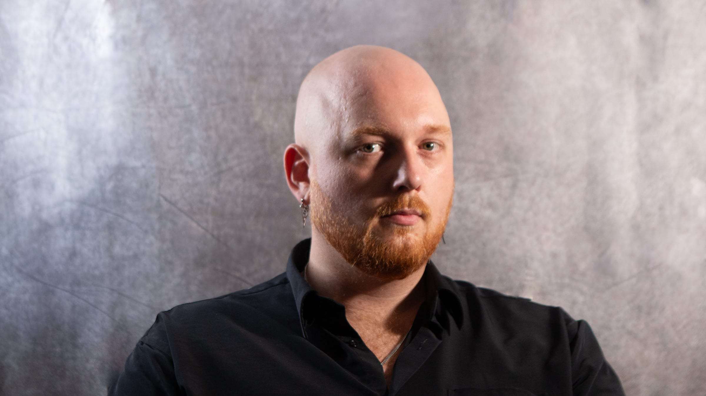

PLATE 01
Selected Work
01 / 05
Photographs on film · 2014 — 2026
A working monograph. Five series, sixty-four photographs — made between Medellín and the road.
Index
Guillaume Delye, French photographer based in Medellín. The work is made on film and printed by hand.
Available for exhibitions, acquisitions, and signed editions. Editorial commissions on the commercial site.

Also working on editorial and commercial commissions.
Visit the commercial portfolio ↗